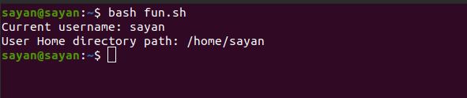

Function is a code snippet which is defined and used to re-run or re-use a logic.
Below script fun.sh contains a function userinfo() which is called while running the script file as: bash fun.sh
function userinfo()
{
echo "Current username:" $USER
echo "User Home directory path:" $HOME
}
userinfo
